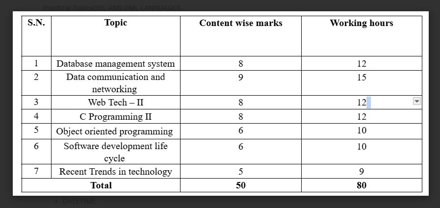

Database Concepts and SQL
DBMS IAMGE TABLE
Data
Data refers to raw, unorganized facts that need to be processed to become meaningful. Example: numbers, names, or dates.
Information
Information is processed data that is meaningful and useful for decision-making.
Features of Information
- Accuracy
- Relevance
- Timeliness
- Completeness
- Consistency
Database and Its Purpose
A database is a structured collection of data. Its main purpose is efficient data storage, retrieval, and management.
Database Terminologies
- Table: Collection of data in rows and columns.
- Field: A column in a table.
- Record: A row in a table.
- Tuple: Another term for record.
- Object: Data + operations in object-oriented databases.
- Keys: Unique identifiers (Primary, Foreign, Candidate, etc.).
Data Dictionary
A data dictionary stores metadata about the structure of the database (tables, fields, data types, etc.).
A language used to define the data dictionary is called data dictionary language.
The data dictionary is consulted before actual data are read or modified in the database system.
Database Management System (DBMS)
Introduction
A DBMS is software for creating and managing databases.
A Database Management System (DBMS) is software that allows users to create, manage, and manipulate databases efficiently.
It serves as an interface between the database and users, ensuring data is stored securely, retrieved quickly, and maintained with integrity.
Objectives
- To provide an efficient way to store large amounts of data.
- To provide easy access to data for users and applications.
- To ensure data integrity and security.
- To eliminate data redundancy and inconsistency.
- To support multi-user environments and concurrent access.
Advantages
- Improved data sharing and data security.
- Data abstraction and independence.
- Reduced data redundancy and improved data integrity.
- Efficient data access and management.
- Backup and recovery mechanisms.
Disadvantages
- High initial cost of DBMS software and hardware.
- Complexity of DBMS system design and implementation.
- Requires specialized personnel to manage the DBMS.
- Performance overhead for managing complex DBMS features.
Types of Database Models
- Hierarchical: Tree-structured model.
IN A HIERARCHIAL DATABASE MODEL,RECORED ARE LOGICALLY ORGANIZED INTO A HIERARCHY OF RELATIONSHIPS.
ALL RECORDS IN THIS MODEL ARE CALLED NODES.EACH NODES IS REALTED TO THE OTHER IN A PARENT-CHILD RELATIONSHIP.
- Network: Many-to-many relationships.
The Network Model in DBMS is a data model that allows the representation of many-to-many relationships in a more flexible and complex structure compared to the Hierarchical Model.
It uses a graph structure consisting of nodes (entities) and edges (relationships) to organize data, enabling more efficient and direct access paths.
Advantages:
Flexibility: Capable of handling multiple types of relationships (1:1, 1:M, M:N), making it suitable for modeling real-life applications.
Efficient Data Access: Allows efficient and direct access to data through multiple paths, reducing data redundancy.
Data Integrity: Ensures data integrity through owner-member relationships, preventing members from existing without owners
Disadvantages:
Complexity: The schema or structure is complex due to the use of pointers for navigation, leading to operational anomalies.
User-Friendliness: The design is not user-friendly and lacks automated query optimization.
Structural Independence: Fails to achieve structural independence, although it can achieve data independence
- Relational: Tables with rows and columns.
Relational Database Model
The Relational Database Model is a widely used database model that organizes data into tables (also called relations).
Each table consists of rows and columns, where rows represent records (tuples) and columns represent attributes (fields) of the data.
Key Features:
- Tables (Relations): Data is stored in two-dimensional tables with rows and columns.
- Rows (Tuples): Each row in a table represents a single record or entity.
- Columns (Attributes): Each column represents a data field or attribute of the entity.
- Primary Key: A unique identifier for each record in a table to ensure entity integrity.
- Foreign Key: An attribute that creates a link between two tables to maintain referential integrity.
Advantages:
- Simple and easy to understand structure using tables.
- Flexibility to handle different types of data.
- Supports powerful query languages like SQL.
- Ensures data integrity through keys and constraints.
- Widely supported by many database management systems.
Example:
Consider a Student table with columns such as StudentID, Name, Age, and Course. Each row represents a student record.
- Entity-Relationship: Conceptual representation of data.
Entity-Relationship (ER) Model
The Entity-Relationship (ER) Model is a high-level conceptual data model that describes the structure of a database in terms of entities, attributes, and relationships. It is primarily used for database design and helps visually represent data requirements.
Key Components:
- Entity: An object or thing in the real world that is distinguishable from others. Entities can be physical objects like a person or book, or concepts like a course or event.
- Attributes: Properties or characteristics of an entity. For example, a Student entity might have attributes like StudentID, Name, and Age.
- Relationships: Associations between entities. For example, a Student enrolls in a Course.
- Cardinality: Specifies the number of instances of one entity related to instances of another entity (e.g., one-to-one, one-to-many, many-to-many).
ER Diagram Symbols:
- Rectangle: Represents an Entity.
- Oval: Represents an Attribute.
- Diamond: Represents a Relationship.
- Lines: Connect entities to their attributes and relationships.
Example:
A simple ER model might show an entity Student with attributes StudentID and Name, and a relationship Enrolls connecting the Student entity to a Course entity.
Integrity Constraints
- Domain: Valid values for a field.
- Entity: Uniqueness of rows (Primary key).
- Referential: Foreign key references a valid row.
- Keys: Primary, Foreign, Candidate, Composite keys.
Normalization
Introduction
Normalization organizes data to reduce redundancy and improve integrity.
Normal Forms
- 1NF: Atomic values only, no repeating groups.
- 2NF: Remove partial dependencies.
- 3NF: Remove transitive dependencies.
Advantages
- Removes redundancy
- Improves data integrity
Disadvantages
- More complex queries
- Slower performance with joins
Centralized vs. Distributed Database
Introduction
Centralized stores all data at one site, distributed spreads data across locations.
Advantages
- Centralized: Easier to manage, consistent data.
- Distributed: Faster access, fault-tolerant.
Disadvantages
- Centralized: Single point of failure.
- Distributed: Complex management, data sync issues.
Comparison
Distributed databases are better for global operations, centralized for small systems.
Database Security
Introduction
Database security ensures data is protected from unauthorized access or alteration.
Challenges
- Hackers
- Insider threats
- Data loss
Security Measures
- Authentication and Authorization
- Encryption
- Backup and auditing
Role of DBA
- Ensure security and backup
- Optimize performance
- Manage users and roles
Database Administrator (DBA) and Roles of DBA
A Database Administrator (DBA) is responsible for managing, maintaining, and securing the database environment. The DBA ensures that the database operates efficiently and is accessible to users while protecting the data from unauthorized access or loss.
Roles of a DBA:
- Database Design: Designing database schemas and structures.
- Performance Monitoring: Ensuring optimal database performance and tuning.
- Security Management: Implementing security policies to protect data.
- Backup and Recovery: Planning and executing data backup and recovery strategies.
- User Management: Creating user accounts and managing permissions.
- Data Integrity: Enforcing rules to maintain data accuracy and consistency.
- Troubleshooting: Resolving database-related issues and failures.
ER Diagrams (Entity-Relationship Diagrams)
ER Diagrams are graphical representations used to model the structure of a database. They depict entities, their attributes, and the relationships between entities to provide a clear overview of the database design.
Key Components of ER Diagrams:
- Entity: An object or concept about which data is stored, represented by a rectangle.
- Attributes: Characteristics or properties of an entity, represented by ovals connected to their entity.
- Relationship: A connection between two or more entities, represented by a diamond.
- Cardinality: Defines the number of instances of one entity related to instances of another (e.g., one-to-one, one-to-many, many-to-many).
- Degree: The number of entities involved in a relationship (binary, ternary, etc.).
Symbols with Meaning:
| Symbol |
Represents |
Description |
| Rectangle |
Entity |
A real-world object or concept (e.g., Student, Course). |
| Oval |
Attribute |
A property or characteristic of an entity (e.g., Name, Age). |
| Diamond |
Relationship |
Association between entities (e.g., Enrolls, Teaches). |
| Line |
Link |
Connects entities to attributes or relationships. |
| Double Oval |
Multivalued Attribute |
Attribute that can have multiple values (e.g., Phone Numbers). |
| Dashed Oval |
Derived Attribute |
Attribute derived from other attributes (e.g., Age calculated from Date of Birth). |
Practical Topics
DDL and DML
- DDL: CREATE, ALTER, DROP
- DML: SELECT, INSERT, UPDATE, DELETE
SQL Data Types
- CHAR, VARCHAR
- BINARY, VARBINARY
- TINYBLOB, TINYTEXT, TEXT, LONGTEXT
- ENUM, BIT
- TINYINT, BOOLEAN, INTEGER
- FLOAT, DOUBLE, DECIMAL
- DATE, DATETIME